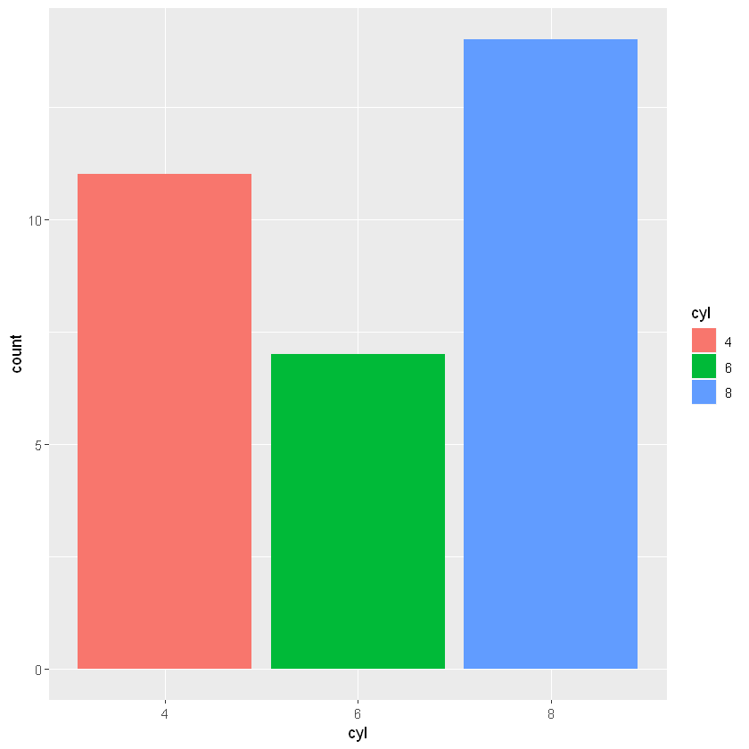

data(mtcars)Week 11 - Exploratory Data Analysis (EDA), data manipulation (dplyr) and data visualization (ggplot2) with R.
- This week you will see
Exploratory Data Analysis (EDA),data manipulation (dplyr)anddata visualization (ggplot2)with R.
Exploratory Data Analysis (EDA)
- A collection of techniques for summarizing data sets with R.
- Search for answers by visualizing and transforming data sets.
- Use what you learn to refine your questions and/or generate new questions.
- We will mostly use
summary,headandtablefunctions and data visualization methods to make EDA.
Example mtcars dataset
First example dataset will be
mtcarsdataset.The data was extracted from the 1974 Motor Trend US magazine, and comprises fuel consumption and 10 aspects of automobile design and performance for 32 automobiles (1973–74 models).
A data frame with 32 observations on 11 (numeric) variables.
mpgMiles/(US) galloncylNumber of cylindersdispDisplacement (cu.in.)hpGross horsepowerdratRear axle ratiowtWeight (1000 lbs)qsec1/4 mile timevsEngine (0 = V-shaped, 1 = straight)amTransmission (0 = automatic, 1 = manual)gearNumber of forward gearscarbNumber of carburetors
mtcarsis a data that comes with R installation so you do not need to import it.
head(mtcars)| mpg | cyl | disp | hp | drat | wt | qsec | vs | am | gear | carb | |
|---|---|---|---|---|---|---|---|---|---|---|---|
| Mazda RX4 | 21.0 | 6 | 160 | 110 | 3.90 | 2.620 | 16.46 | 0 | 1 | 4 | 4 |
| Mazda RX4 Wag | 21.0 | 6 | 160 | 110 | 3.90 | 2.875 | 17.02 | 0 | 1 | 4 | 4 |
| Datsun 710 | 22.8 | 4 | 108 | 93 | 3.85 | 2.320 | 18.61 | 1 | 1 | 4 | 1 |
| Hornet 4 Drive | 21.4 | 6 | 258 | 110 | 3.08 | 3.215 | 19.44 | 1 | 0 | 3 | 1 |
| Hornet Sportabout | 18.7 | 8 | 360 | 175 | 3.15 | 3.440 | 17.02 | 0 | 0 | 3 | 2 |
| Valiant | 18.1 | 6 | 225 | 105 | 2.76 | 3.460 | 20.22 | 1 | 0 | 3 | 1 |
summary(mtcars) mpg cyl disp hp
Min. :10.40 Min. :4.000 Min. : 71.1 Min. : 52.0
1st Qu.:15.43 1st Qu.:4.000 1st Qu.:120.8 1st Qu.: 96.5
Median :19.20 Median :6.000 Median :196.3 Median :123.0
Mean :20.09 Mean :6.188 Mean :230.7 Mean :146.7
3rd Qu.:22.80 3rd Qu.:8.000 3rd Qu.:326.0 3rd Qu.:180.0
Max. :33.90 Max. :8.000 Max. :472.0 Max. :335.0
drat wt qsec vs
Min. :2.760 Min. :1.513 Min. :14.50 Min. :0.0000
1st Qu.:3.080 1st Qu.:2.581 1st Qu.:16.89 1st Qu.:0.0000
Median :3.695 Median :3.325 Median :17.71 Median :0.0000
Mean :3.597 Mean :3.217 Mean :17.85 Mean :0.4375
3rd Qu.:3.920 3rd Qu.:3.610 3rd Qu.:18.90 3rd Qu.:1.0000
Max. :4.930 Max. :5.424 Max. :22.90 Max. :1.0000
am gear carb
Min. :0.0000 Min. :3.000 Min. :1.000
1st Qu.:0.0000 1st Qu.:3.000 1st Qu.:2.000
Median :0.0000 Median :4.000 Median :2.000
Mean :0.4062 Mean :3.688 Mean :2.812
3rd Qu.:1.0000 3rd Qu.:4.000 3rd Qu.:4.000
Max. :1.0000 Max. :5.000 Max. :8.000 - You can use
applyto iterate a function through all the columns. The code below gives a frequency table for all the columns. - Here the
applyfunction takes three arguments.- First is the dataset
mtcars - Second is the direction of the function
1is for the rows,2is for the column. - Third, the function to be applied
table
- First is the dataset
- So
apply(mtcars,2,table)means that,tablefunction will be applied to all the columns2inside themtcarsdataset. - According to dataset description (see
?mtcars) first we need to categorize some variables.
apply(mtcars,2,table)$mpg
10.4 13.3 14.3 14.7 15 15.2 15.5 15.8 16.4 17.3 17.8 18.1 18.7 19.2 19.7 21
2 1 1 1 1 2 1 1 1 1 1 1 1 2 1 2
21.4 21.5 22.8 24.4 26 27.3 30.4 32.4 33.9
2 1 2 1 1 1 2 1 1
$cyl
4 6 8
11 7 14
$disp
71.1 75.7 78.7 79 95.1 108 120.1 120.3 121 140.8 145 146.7 160
1 1 1 1 1 1 1 1 1 1 1 1 2
167.6 225 258 275.8 301 304 318 350 351 360 400 440 460
2 1 1 3 1 1 1 1 1 2 1 1 1
472
1
$hp
52 62 65 66 91 93 95 97 105 109 110 113 123 150 175 180 205 215 230 245
1 1 1 2 1 1 1 1 1 1 3 1 2 2 3 3 1 1 1 2
264 335
1 1
$drat
2.76 2.93 3 3.07 3.08 3.15 3.21 3.23 3.54 3.62 3.69 3.7 3.73 3.77 3.85 3.9
2 1 1 3 2 2 1 1 1 1 1 1 1 1 1 2
3.92 4.08 4.11 4.22 4.43 4.93
3 2 1 2 1 1
$wt
1.513 1.615 1.835 1.935 2.14 2.2 2.32 2.465 2.62 2.77 2.78 2.875 3.15
1 1 1 1 1 1 1 1 1 1 1 1 1
3.17 3.19 3.215 3.435 3.44 3.46 3.52 3.57 3.73 3.78 3.84 3.845 4.07
1 1 1 1 3 1 1 2 1 1 1 1 1
5.25 5.345 5.424
1 1 1
$qsec
14.5 14.6 15.41 15.5 15.84 16.46 16.7 16.87 16.9 17.02 17.05 17.3 17.4
1 1 1 1 1 1 1 1 1 2 1 1 1
17.42 17.6 17.82 17.98 18 18.3 18.52 18.6 18.61 18.9 19.44 19.47 19.9
1 1 1 1 1 1 1 1 1 2 1 1 1
20 20.01 20.22 22.9
1 1 1 1
$vs
0 1
18 14
$am
0 1
19 13
$gear
3 4 5
15 12 5
$carb
1 2 3 4 6 8
7 10 3 10 1 1 - The code below converts some of the suitable variables to categorical ones.
mtcars$cyl <- as.factor(mtcars$cyl)
mtcars$vs <- factor(mtcars$vs, labels = c("V-shaped", "straight"))
mtcars$am <- factor(mtcars$am, labels = c("automatic", "manual"))
mtcars$carb <- as.factor(mtcars$carb)
mtcars$gear <- as.factor(mtcars$gear)summary(mtcars) mpg cyl disp hp drat
Min. :10.40 4:11 Min. : 71.1 Min. : 52.0 Min. :2.760
1st Qu.:15.43 6: 7 1st Qu.:120.8 1st Qu.: 96.5 1st Qu.:3.080
Median :19.20 8:14 Median :196.3 Median :123.0 Median :3.695
Mean :20.09 Mean :230.7 Mean :146.7 Mean :3.597
3rd Qu.:22.80 3rd Qu.:326.0 3rd Qu.:180.0 3rd Qu.:3.920
Max. :33.90 Max. :472.0 Max. :335.0 Max. :4.930
wt qsec vs am gear carb
Min. :1.513 Min. :14.50 V-shaped:18 automatic:19 3:15 1: 7
1st Qu.:2.581 1st Qu.:16.89 straight:14 manual :13 4:12 2:10
Median :3.325 Median :17.71 5: 5 3: 3
Mean :3.217 Mean :17.85 4:10
3rd Qu.:3.610 3rd Qu.:18.90 6: 1
Max. :5.424 Max. :22.90 8: 1 Data Manipulation with dplyr
The Pipe Operator (%>%)
The pipe operator originally invented in the
magrittr()package which provides a more simple and readable approach to coding complex and nested structures.Later pipe operator is used as a cornerstone in
dplyr()package.Consider the different ways of achieving the same result below.
For this we will continue to look at the
mtcars()data.Assume that, we want to sort
- average fuel consumption of cars
- with number of carburators greater than 1
- by their number of cylinders
- in a descending order.
We can solve this with a few different approaches.
Do not worry about the functions given below, just look at the readebility and complexity of the given code, you will learn each of these functions by the end of this week.
Nested option
# install.packages('dplyr') # if you didn't do that earlier
library(dplyr)arrange(
summarize(
group_by(
filter(mtcars, as.numeric(carb) > 1),
cyl
),
Avg_mpg = mean(mpg)
),
desc(Avg_mpg)
)| cyl | Avg_mpg |
|---|---|
| 4 | 25.90 |
| 6 | 19.74 |
| 8 | 15.10 |
- This approach is too complicated as it requires elaboration from inside to outside.
Multiple Object Opinion
a <- filter(mtcars, as.numeric(carb) > 1)
b <- group_by(a, cyl)
c <- summarise(b, Avg_mpg = mean(mpg))
d <- arrange(c, desc(Avg_mpg))
print(d)# A tibble: 3 x 2
cyl Avg_mpg
<fct> <dbl>
1 4 25.9
2 6 19.7
3 8 15.1- This approach easy to read but requires creation of unnecessary mediating objects.
%>% (Pipe) Option
mtcars %>%
filter(as.numeric(carb) > 1) %>%
group_by(cyl) %>%
summarise(Avg_mpg = mean(mpg)) %>%
arrange(desc(Avg_mpg))| cyl | Avg_mpg |
|---|---|
| 4 | 25.90 |
| 6 | 19.74 |
| 8 | 15.10 |
%>%option is both easy to read and does not produce unnecessary objects.
Using dplyr to manipulate data
- In this section we are going to find some useful functions that is contained in
dplyrpackage. - First load the package.
library(dplyr)select()
select()is used to select variables in a dataframe.- Let’s select variables
mpganddisp.
select(mtcars, mpg, cyl)| mpg | cyl | |
|---|---|---|
| Mazda RX4 | 21.0 | 6 |
| Mazda RX4 Wag | 21.0 | 6 |
| Datsun 710 | 22.8 | 4 |
| Hornet 4 Drive | 21.4 | 6 |
| Hornet Sportabout | 18.7 | 8 |
| Valiant | 18.1 | 6 |
| Duster 360 | 14.3 | 8 |
| Merc 240D | 24.4 | 4 |
| Merc 230 | 22.8 | 4 |
| Merc 280 | 19.2 | 6 |
| Merc 280C | 17.8 | 6 |
| Merc 450SE | 16.4 | 8 |
| Merc 450SL | 17.3 | 8 |
| Merc 450SLC | 15.2 | 8 |
| Cadillac Fleetwood | 10.4 | 8 |
| Lincoln Continental | 10.4 | 8 |
| Chrysler Imperial | 14.7 | 8 |
| Fiat 128 | 32.4 | 4 |
| Honda Civic | 30.4 | 4 |
| Toyota Corolla | 33.9 | 4 |
| Toyota Corona | 21.5 | 4 |
| Dodge Challenger | 15.5 | 8 |
| AMC Javelin | 15.2 | 8 |
| Camaro Z28 | 13.3 | 8 |
| Pontiac Firebird | 19.2 | 8 |
| Fiat X1-9 | 27.3 | 4 |
| Porsche 914-2 | 26.0 | 4 |
| Lotus Europa | 30.4 | 4 |
| Ford Pantera L | 15.8 | 8 |
| Ferrari Dino | 19.7 | 6 |
| Maserati Bora | 15.0 | 8 |
| Volvo 142E | 21.4 | 4 |
- Or you can use the pipe operator to achieve the same output. We will use this notation in the following examples because it allows us to use nested operations.
mtcars %>% select(mpg, cyl)| mpg | cyl | |
|---|---|---|
| Mazda RX4 | 21.0 | 6 |
| Mazda RX4 Wag | 21.0 | 6 |
| Datsun 710 | 22.8 | 4 |
| Hornet 4 Drive | 21.4 | 6 |
| Hornet Sportabout | 18.7 | 8 |
| Valiant | 18.1 | 6 |
| Duster 360 | 14.3 | 8 |
| Merc 240D | 24.4 | 4 |
| Merc 230 | 22.8 | 4 |
| Merc 280 | 19.2 | 6 |
| Merc 280C | 17.8 | 6 |
| Merc 450SE | 16.4 | 8 |
| Merc 450SL | 17.3 | 8 |
| Merc 450SLC | 15.2 | 8 |
| Cadillac Fleetwood | 10.4 | 8 |
| Lincoln Continental | 10.4 | 8 |
| Chrysler Imperial | 14.7 | 8 |
| Fiat 128 | 32.4 | 4 |
| Honda Civic | 30.4 | 4 |
| Toyota Corolla | 33.9 | 4 |
| Toyota Corona | 21.5 | 4 |
| Dodge Challenger | 15.5 | 8 |
| AMC Javelin | 15.2 | 8 |
| Camaro Z28 | 13.3 | 8 |
| Pontiac Firebird | 19.2 | 8 |
| Fiat X1-9 | 27.3 | 4 |
| Porsche 914-2 | 26.0 | 4 |
| Lotus Europa | 30.4 | 4 |
| Ford Pantera L | 15.8 | 8 |
| Ferrari Dino | 19.7 | 6 |
| Maserati Bora | 15.0 | 8 |
| Volvo 142E | 21.4 | 4 |
- You can also use
:for selecting successive variables.
mtcars %>% select(mpg:qsec)| mpg | cyl | disp | hp | drat | wt | qsec | |
|---|---|---|---|---|---|---|---|
| Mazda RX4 | 21.0 | 6 | 160.0 | 110 | 3.90 | 2.620 | 16.46 |
| Mazda RX4 Wag | 21.0 | 6 | 160.0 | 110 | 3.90 | 2.875 | 17.02 |
| Datsun 710 | 22.8 | 4 | 108.0 | 93 | 3.85 | 2.320 | 18.61 |
| Hornet 4 Drive | 21.4 | 6 | 258.0 | 110 | 3.08 | 3.215 | 19.44 |
| Hornet Sportabout | 18.7 | 8 | 360.0 | 175 | 3.15 | 3.440 | 17.02 |
| Valiant | 18.1 | 6 | 225.0 | 105 | 2.76 | 3.460 | 20.22 |
| Duster 360 | 14.3 | 8 | 360.0 | 245 | 3.21 | 3.570 | 15.84 |
| Merc 240D | 24.4 | 4 | 146.7 | 62 | 3.69 | 3.190 | 20.00 |
| Merc 230 | 22.8 | 4 | 140.8 | 95 | 3.92 | 3.150 | 22.90 |
| Merc 280 | 19.2 | 6 | 167.6 | 123 | 3.92 | 3.440 | 18.30 |
| Merc 280C | 17.8 | 6 | 167.6 | 123 | 3.92 | 3.440 | 18.90 |
| Merc 450SE | 16.4 | 8 | 275.8 | 180 | 3.07 | 4.070 | 17.40 |
| Merc 450SL | 17.3 | 8 | 275.8 | 180 | 3.07 | 3.730 | 17.60 |
| Merc 450SLC | 15.2 | 8 | 275.8 | 180 | 3.07 | 3.780 | 18.00 |
| Cadillac Fleetwood | 10.4 | 8 | 472.0 | 205 | 2.93 | 5.250 | 17.98 |
| Lincoln Continental | 10.4 | 8 | 460.0 | 215 | 3.00 | 5.424 | 17.82 |
| Chrysler Imperial | 14.7 | 8 | 440.0 | 230 | 3.23 | 5.345 | 17.42 |
| Fiat 128 | 32.4 | 4 | 78.7 | 66 | 4.08 | 2.200 | 19.47 |
| Honda Civic | 30.4 | 4 | 75.7 | 52 | 4.93 | 1.615 | 18.52 |
| Toyota Corolla | 33.9 | 4 | 71.1 | 65 | 4.22 | 1.835 | 19.90 |
| Toyota Corona | 21.5 | 4 | 120.1 | 97 | 3.70 | 2.465 | 20.01 |
| Dodge Challenger | 15.5 | 8 | 318.0 | 150 | 2.76 | 3.520 | 16.87 |
| AMC Javelin | 15.2 | 8 | 304.0 | 150 | 3.15 | 3.435 | 17.30 |
| Camaro Z28 | 13.3 | 8 | 350.0 | 245 | 3.73 | 3.840 | 15.41 |
| Pontiac Firebird | 19.2 | 8 | 400.0 | 175 | 3.08 | 3.845 | 17.05 |
| Fiat X1-9 | 27.3 | 4 | 79.0 | 66 | 4.08 | 1.935 | 18.90 |
| Porsche 914-2 | 26.0 | 4 | 120.3 | 91 | 4.43 | 2.140 | 16.70 |
| Lotus Europa | 30.4 | 4 | 95.1 | 113 | 3.77 | 1.513 | 16.90 |
| Ford Pantera L | 15.8 | 8 | 351.0 | 264 | 4.22 | 3.170 | 14.50 |
| Ferrari Dino | 19.7 | 6 | 145.0 | 175 | 3.62 | 2.770 | 15.50 |
| Maserati Bora | 15.0 | 8 | 301.0 | 335 | 3.54 | 3.570 | 14.60 |
| Volvo 142E | 21.4 | 4 | 121.0 | 109 | 4.11 | 2.780 | 18.60 |
- You can use negative sign to exclude variables.
mtcars %>% select(-mpg:-qsec)| vs | am | gear | carb | |
|---|---|---|---|---|
| Mazda RX4 | V-shaped | manual | 4 | 4 |
| Mazda RX4 Wag | V-shaped | manual | 4 | 4 |
| Datsun 710 | straight | manual | 4 | 1 |
| Hornet 4 Drive | straight | automatic | 3 | 1 |
| Hornet Sportabout | V-shaped | automatic | 3 | 2 |
| Valiant | straight | automatic | 3 | 1 |
| Duster 360 | V-shaped | automatic | 3 | 4 |
| Merc 240D | straight | automatic | 4 | 2 |
| Merc 230 | straight | automatic | 4 | 2 |
| Merc 280 | straight | automatic | 4 | 4 |
| Merc 280C | straight | automatic | 4 | 4 |
| Merc 450SE | V-shaped | automatic | 3 | 3 |
| Merc 450SL | V-shaped | automatic | 3 | 3 |
| Merc 450SLC | V-shaped | automatic | 3 | 3 |
| Cadillac Fleetwood | V-shaped | automatic | 3 | 4 |
| Lincoln Continental | V-shaped | automatic | 3 | 4 |
| Chrysler Imperial | V-shaped | automatic | 3 | 4 |
| Fiat 128 | straight | manual | 4 | 1 |
| Honda Civic | straight | manual | 4 | 2 |
| Toyota Corolla | straight | manual | 4 | 1 |
| Toyota Corona | straight | automatic | 3 | 1 |
| Dodge Challenger | V-shaped | automatic | 3 | 2 |
| AMC Javelin | V-shaped | automatic | 3 | 2 |
| Camaro Z28 | V-shaped | automatic | 3 | 4 |
| Pontiac Firebird | V-shaped | automatic | 3 | 2 |
| Fiat X1-9 | straight | manual | 4 | 1 |
| Porsche 914-2 | V-shaped | manual | 5 | 2 |
| Lotus Europa | straight | manual | 5 | 2 |
| Ford Pantera L | V-shaped | manual | 5 | 4 |
| Ferrari Dino | V-shaped | manual | 5 | 6 |
| Maserati Bora | V-shaped | manual | 5 | 8 |
| Volvo 142E | straight | manual | 4 | 2 |
- Generally you have to assign the new dataframe to a new variable.
mtcars2 <- mtcars %>% select(-mpg:-qsec)
mtcars2| vs | am | gear | carb | |
|---|---|---|---|---|
| Mazda RX4 | V-shaped | manual | 4 | 4 |
| Mazda RX4 Wag | V-shaped | manual | 4 | 4 |
| Datsun 710 | straight | manual | 4 | 1 |
| Hornet 4 Drive | straight | automatic | 3 | 1 |
| Hornet Sportabout | V-shaped | automatic | 3 | 2 |
| Valiant | straight | automatic | 3 | 1 |
| Duster 360 | V-shaped | automatic | 3 | 4 |
| Merc 240D | straight | automatic | 4 | 2 |
| Merc 230 | straight | automatic | 4 | 2 |
| Merc 280 | straight | automatic | 4 | 4 |
| Merc 280C | straight | automatic | 4 | 4 |
| Merc 450SE | V-shaped | automatic | 3 | 3 |
| Merc 450SL | V-shaped | automatic | 3 | 3 |
| Merc 450SLC | V-shaped | automatic | 3 | 3 |
| Cadillac Fleetwood | V-shaped | automatic | 3 | 4 |
| Lincoln Continental | V-shaped | automatic | 3 | 4 |
| Chrysler Imperial | V-shaped | automatic | 3 | 4 |
| Fiat 128 | straight | manual | 4 | 1 |
| Honda Civic | straight | manual | 4 | 2 |
| Toyota Corolla | straight | manual | 4 | 1 |
| Toyota Corona | straight | automatic | 3 | 1 |
| Dodge Challenger | V-shaped | automatic | 3 | 2 |
| AMC Javelin | V-shaped | automatic | 3 | 2 |
| Camaro Z28 | V-shaped | automatic | 3 | 4 |
| Pontiac Firebird | V-shaped | automatic | 3 | 2 |
| Fiat X1-9 | straight | manual | 4 | 1 |
| Porsche 914-2 | V-shaped | manual | 5 | 2 |
| Lotus Europa | straight | manual | 5 | 2 |
| Ford Pantera L | V-shaped | manual | 5 | 4 |
| Ferrari Dino | V-shaped | manual | 5 | 6 |
| Maserati Bora | V-shaped | manual | 5 | 8 |
| Volvo 142E | straight | manual | 4 | 2 |
- If you manage your variables name properly you can use additional arguments, such as
starts_with(),ends_with(),contains()ormatches(). - Let’s extract the variables starts with the letter
c, ends with lettert, and contains lettera. - Matches is used to use regular expressions in variable names.
- For a full list of available options use
help(select)
mtcars %>% select(starts_with("c"))| cyl | carb | |
|---|---|---|
| Mazda RX4 | 6 | 4 |
| Mazda RX4 Wag | 6 | 4 |
| Datsun 710 | 4 | 1 |
| Hornet 4 Drive | 6 | 1 |
| Hornet Sportabout | 8 | 2 |
| Valiant | 6 | 1 |
| Duster 360 | 8 | 4 |
| Merc 240D | 4 | 2 |
| Merc 230 | 4 | 2 |
| Merc 280 | 6 | 4 |
| Merc 280C | 6 | 4 |
| Merc 450SE | 8 | 3 |
| Merc 450SL | 8 | 3 |
| Merc 450SLC | 8 | 3 |
| Cadillac Fleetwood | 8 | 4 |
| Lincoln Continental | 8 | 4 |
| Chrysler Imperial | 8 | 4 |
| Fiat 128 | 4 | 1 |
| Honda Civic | 4 | 2 |
| Toyota Corolla | 4 | 1 |
| Toyota Corona | 4 | 1 |
| Dodge Challenger | 8 | 2 |
| AMC Javelin | 8 | 2 |
| Camaro Z28 | 8 | 4 |
| Pontiac Firebird | 8 | 2 |
| Fiat X1-9 | 4 | 1 |
| Porsche 914-2 | 4 | 2 |
| Lotus Europa | 4 | 2 |
| Ford Pantera L | 8 | 4 |
| Ferrari Dino | 6 | 6 |
| Maserati Bora | 8 | 8 |
| Volvo 142E | 4 | 2 |
mtcars %>% select(ends_with("t"))| drat | wt | |
|---|---|---|
| Mazda RX4 | 3.90 | 2.620 |
| Mazda RX4 Wag | 3.90 | 2.875 |
| Datsun 710 | 3.85 | 2.320 |
| Hornet 4 Drive | 3.08 | 3.215 |
| Hornet Sportabout | 3.15 | 3.440 |
| Valiant | 2.76 | 3.460 |
| Duster 360 | 3.21 | 3.570 |
| Merc 240D | 3.69 | 3.190 |
| Merc 230 | 3.92 | 3.150 |
| Merc 280 | 3.92 | 3.440 |
| Merc 280C | 3.92 | 3.440 |
| Merc 450SE | 3.07 | 4.070 |
| Merc 450SL | 3.07 | 3.730 |
| Merc 450SLC | 3.07 | 3.780 |
| Cadillac Fleetwood | 2.93 | 5.250 |
| Lincoln Continental | 3.00 | 5.424 |
| Chrysler Imperial | 3.23 | 5.345 |
| Fiat 128 | 4.08 | 2.200 |
| Honda Civic | 4.93 | 1.615 |
| Toyota Corolla | 4.22 | 1.835 |
| Toyota Corona | 3.70 | 2.465 |
| Dodge Challenger | 2.76 | 3.520 |
| AMC Javelin | 3.15 | 3.435 |
| Camaro Z28 | 3.73 | 3.840 |
| Pontiac Firebird | 3.08 | 3.845 |
| Fiat X1-9 | 4.08 | 1.935 |
| Porsche 914-2 | 4.43 | 2.140 |
| Lotus Europa | 3.77 | 1.513 |
| Ford Pantera L | 4.22 | 3.170 |
| Ferrari Dino | 3.62 | 2.770 |
| Maserati Bora | 3.54 | 3.570 |
| Volvo 142E | 4.11 | 2.780 |
mtcars %>% select(contains("a"))| drat | am | gear | carb | |
|---|---|---|---|---|
| Mazda RX4 | 3.90 | manual | 4 | 4 |
| Mazda RX4 Wag | 3.90 | manual | 4 | 4 |
| Datsun 710 | 3.85 | manual | 4 | 1 |
| Hornet 4 Drive | 3.08 | automatic | 3 | 1 |
| Hornet Sportabout | 3.15 | automatic | 3 | 2 |
| Valiant | 2.76 | automatic | 3 | 1 |
| Duster 360 | 3.21 | automatic | 3 | 4 |
| Merc 240D | 3.69 | automatic | 4 | 2 |
| Merc 230 | 3.92 | automatic | 4 | 2 |
| Merc 280 | 3.92 | automatic | 4 | 4 |
| Merc 280C | 3.92 | automatic | 4 | 4 |
| Merc 450SE | 3.07 | automatic | 3 | 3 |
| Merc 450SL | 3.07 | automatic | 3 | 3 |
| Merc 450SLC | 3.07 | automatic | 3 | 3 |
| Cadillac Fleetwood | 2.93 | automatic | 3 | 4 |
| Lincoln Continental | 3.00 | automatic | 3 | 4 |
| Chrysler Imperial | 3.23 | automatic | 3 | 4 |
| Fiat 128 | 4.08 | manual | 4 | 1 |
| Honda Civic | 4.93 | manual | 4 | 2 |
| Toyota Corolla | 4.22 | manual | 4 | 1 |
| Toyota Corona | 3.70 | automatic | 3 | 1 |
| Dodge Challenger | 2.76 | automatic | 3 | 2 |
| AMC Javelin | 3.15 | automatic | 3 | 2 |
| Camaro Z28 | 3.73 | automatic | 3 | 4 |
| Pontiac Firebird | 3.08 | automatic | 3 | 2 |
| Fiat X1-9 | 4.08 | manual | 4 | 1 |
| Porsche 914-2 | 4.43 | manual | 5 | 2 |
| Lotus Europa | 3.77 | manual | 5 | 2 |
| Ford Pantera L | 4.22 | manual | 5 | 4 |
| Ferrari Dino | 3.62 | manual | 5 | 6 |
| Maserati Bora | 3.54 | manual | 5 | 8 |
| Volvo 142E | 4.11 | manual | 4 | 2 |
mtcars %>% select(matches("^(c|m)")) # starts with either c or m| mpg | cyl | carb | |
|---|---|---|---|
| Mazda RX4 | 21.0 | 6 | 4 |
| Mazda RX4 Wag | 21.0 | 6 | 4 |
| Datsun 710 | 22.8 | 4 | 1 |
| Hornet 4 Drive | 21.4 | 6 | 1 |
| Hornet Sportabout | 18.7 | 8 | 2 |
| Valiant | 18.1 | 6 | 1 |
| Duster 360 | 14.3 | 8 | 4 |
| Merc 240D | 24.4 | 4 | 2 |
| Merc 230 | 22.8 | 4 | 2 |
| Merc 280 | 19.2 | 6 | 4 |
| Merc 280C | 17.8 | 6 | 4 |
| Merc 450SE | 16.4 | 8 | 3 |
| Merc 450SL | 17.3 | 8 | 3 |
| Merc 450SLC | 15.2 | 8 | 3 |
| Cadillac Fleetwood | 10.4 | 8 | 4 |
| Lincoln Continental | 10.4 | 8 | 4 |
| Chrysler Imperial | 14.7 | 8 | 4 |
| Fiat 128 | 32.4 | 4 | 1 |
| Honda Civic | 30.4 | 4 | 2 |
| Toyota Corolla | 33.9 | 4 | 1 |
| Toyota Corona | 21.5 | 4 | 1 |
| Dodge Challenger | 15.5 | 8 | 2 |
| AMC Javelin | 15.2 | 8 | 2 |
| Camaro Z28 | 13.3 | 8 | 4 |
| Pontiac Firebird | 19.2 | 8 | 2 |
| Fiat X1-9 | 27.3 | 4 | 1 |
| Porsche 914-2 | 26.0 | 4 | 2 |
| Lotus Europa | 30.4 | 4 | 2 |
| Ford Pantera L | 15.8 | 8 | 4 |
| Ferrari Dino | 19.7 | 6 | 6 |
| Maserati Bora | 15.0 | 8 | 8 |
| Volvo 142E | 21.4 | 4 | 2 |
- You can also rename a variable while selecting.
mtcars %>% select(MilesPerGallon = mpg)| MilesPerGallon | |
|---|---|
| Mazda RX4 | 21.0 |
| Mazda RX4 Wag | 21.0 |
| Datsun 710 | 22.8 |
| Hornet 4 Drive | 21.4 |
| Hornet Sportabout | 18.7 |
| Valiant | 18.1 |
| Duster 360 | 14.3 |
| Merc 240D | 24.4 |
| Merc 230 | 22.8 |
| Merc 280 | 19.2 |
| Merc 280C | 17.8 |
| Merc 450SE | 16.4 |
| Merc 450SL | 17.3 |
| Merc 450SLC | 15.2 |
| Cadillac Fleetwood | 10.4 |
| Lincoln Continental | 10.4 |
| Chrysler Imperial | 14.7 |
| Fiat 128 | 32.4 |
| Honda Civic | 30.4 |
| Toyota Corolla | 33.9 |
| Toyota Corona | 21.5 |
| Dodge Challenger | 15.5 |
| AMC Javelin | 15.2 |
| Camaro Z28 | 13.3 |
| Pontiac Firebird | 19.2 |
| Fiat X1-9 | 27.3 |
| Porsche 914-2 | 26.0 |
| Lotus Europa | 30.4 |
| Ford Pantera L | 15.8 |
| Ferrari Dino | 19.7 |
| Maserati Bora | 15.0 |
| Volvo 142E | 21.4 |
- If you intend to change variable name without selecting it, just use
rename().
mtcars %>% rename(MilesPerGallon = mpg)| MilesPerGallon | cyl | disp | hp | drat | wt | qsec | vs | am | gear | carb | |
|---|---|---|---|---|---|---|---|---|---|---|---|
| Mazda RX4 | 21.0 | 6 | 160.0 | 110 | 3.90 | 2.620 | 16.46 | V-shaped | manual | 4 | 4 |
| Mazda RX4 Wag | 21.0 | 6 | 160.0 | 110 | 3.90 | 2.875 | 17.02 | V-shaped | manual | 4 | 4 |
| Datsun 710 | 22.8 | 4 | 108.0 | 93 | 3.85 | 2.320 | 18.61 | straight | manual | 4 | 1 |
| Hornet 4 Drive | 21.4 | 6 | 258.0 | 110 | 3.08 | 3.215 | 19.44 | straight | automatic | 3 | 1 |
| Hornet Sportabout | 18.7 | 8 | 360.0 | 175 | 3.15 | 3.440 | 17.02 | V-shaped | automatic | 3 | 2 |
| Valiant | 18.1 | 6 | 225.0 | 105 | 2.76 | 3.460 | 20.22 | straight | automatic | 3 | 1 |
| Duster 360 | 14.3 | 8 | 360.0 | 245 | 3.21 | 3.570 | 15.84 | V-shaped | automatic | 3 | 4 |
| Merc 240D | 24.4 | 4 | 146.7 | 62 | 3.69 | 3.190 | 20.00 | straight | automatic | 4 | 2 |
| Merc 230 | 22.8 | 4 | 140.8 | 95 | 3.92 | 3.150 | 22.90 | straight | automatic | 4 | 2 |
| Merc 280 | 19.2 | 6 | 167.6 | 123 | 3.92 | 3.440 | 18.30 | straight | automatic | 4 | 4 |
| Merc 280C | 17.8 | 6 | 167.6 | 123 | 3.92 | 3.440 | 18.90 | straight | automatic | 4 | 4 |
| Merc 450SE | 16.4 | 8 | 275.8 | 180 | 3.07 | 4.070 | 17.40 | V-shaped | automatic | 3 | 3 |
| Merc 450SL | 17.3 | 8 | 275.8 | 180 | 3.07 | 3.730 | 17.60 | V-shaped | automatic | 3 | 3 |
| Merc 450SLC | 15.2 | 8 | 275.8 | 180 | 3.07 | 3.780 | 18.00 | V-shaped | automatic | 3 | 3 |
| Cadillac Fleetwood | 10.4 | 8 | 472.0 | 205 | 2.93 | 5.250 | 17.98 | V-shaped | automatic | 3 | 4 |
| Lincoln Continental | 10.4 | 8 | 460.0 | 215 | 3.00 | 5.424 | 17.82 | V-shaped | automatic | 3 | 4 |
| Chrysler Imperial | 14.7 | 8 | 440.0 | 230 | 3.23 | 5.345 | 17.42 | V-shaped | automatic | 3 | 4 |
| Fiat 128 | 32.4 | 4 | 78.7 | 66 | 4.08 | 2.200 | 19.47 | straight | manual | 4 | 1 |
| Honda Civic | 30.4 | 4 | 75.7 | 52 | 4.93 | 1.615 | 18.52 | straight | manual | 4 | 2 |
| Toyota Corolla | 33.9 | 4 | 71.1 | 65 | 4.22 | 1.835 | 19.90 | straight | manual | 4 | 1 |
| Toyota Corona | 21.5 | 4 | 120.1 | 97 | 3.70 | 2.465 | 20.01 | straight | automatic | 3 | 1 |
| Dodge Challenger | 15.5 | 8 | 318.0 | 150 | 2.76 | 3.520 | 16.87 | V-shaped | automatic | 3 | 2 |
| AMC Javelin | 15.2 | 8 | 304.0 | 150 | 3.15 | 3.435 | 17.30 | V-shaped | automatic | 3 | 2 |
| Camaro Z28 | 13.3 | 8 | 350.0 | 245 | 3.73 | 3.840 | 15.41 | V-shaped | automatic | 3 | 4 |
| Pontiac Firebird | 19.2 | 8 | 400.0 | 175 | 3.08 | 3.845 | 17.05 | V-shaped | automatic | 3 | 2 |
| Fiat X1-9 | 27.3 | 4 | 79.0 | 66 | 4.08 | 1.935 | 18.90 | straight | manual | 4 | 1 |
| Porsche 914-2 | 26.0 | 4 | 120.3 | 91 | 4.43 | 2.140 | 16.70 | V-shaped | manual | 5 | 2 |
| Lotus Europa | 30.4 | 4 | 95.1 | 113 | 3.77 | 1.513 | 16.90 | straight | manual | 5 | 2 |
| Ford Pantera L | 15.8 | 8 | 351.0 | 264 | 4.22 | 3.170 | 14.50 | V-shaped | manual | 5 | 4 |
| Ferrari Dino | 19.7 | 6 | 145.0 | 175 | 3.62 | 2.770 | 15.50 | V-shaped | manual | 5 | 6 |
| Maserati Bora | 15.0 | 8 | 301.0 | 335 | 3.54 | 3.570 | 14.60 | V-shaped | manual | 5 | 8 |
| Volvo 142E | 21.4 | 4 | 121.0 | 109 | 4.11 | 2.780 | 18.60 | straight | manual | 4 | 2 |
filter()
- The function
filter()is used, to get a subset in rows where a certain criteria met. select()is used for filtering columns andfilter()is used to filtering rows.- Let’s start by filtering cars with 4 cylinders.
mtcars %>% filter(cyl == 4)| mpg | cyl | disp | hp | drat | wt | qsec | vs | am | gear | carb |
|---|---|---|---|---|---|---|---|---|---|---|
| 22.8 | 4 | 108.0 | 93 | 3.85 | 2.320 | 18.61 | straight | manual | 4 | 1 |
| 24.4 | 4 | 146.7 | 62 | 3.69 | 3.190 | 20.00 | straight | automatic | 4 | 2 |
| 22.8 | 4 | 140.8 | 95 | 3.92 | 3.150 | 22.90 | straight | automatic | 4 | 2 |
| 32.4 | 4 | 78.7 | 66 | 4.08 | 2.200 | 19.47 | straight | manual | 4 | 1 |
| 30.4 | 4 | 75.7 | 52 | 4.93 | 1.615 | 18.52 | straight | manual | 4 | 2 |
| 33.9 | 4 | 71.1 | 65 | 4.22 | 1.835 | 19.90 | straight | manual | 4 | 1 |
| 21.5 | 4 | 120.1 | 97 | 3.70 | 2.465 | 20.01 | straight | automatic | 3 | 1 |
| 27.3 | 4 | 79.0 | 66 | 4.08 | 1.935 | 18.90 | straight | manual | 4 | 1 |
| 26.0 | 4 | 120.3 | 91 | 4.43 | 2.140 | 16.70 | V-shaped | manual | 5 | 2 |
| 30.4 | 4 | 95.1 | 113 | 3.77 | 1.513 | 16.90 | straight | manual | 5 | 2 |
| 21.4 | 4 | 121.0 | 109 | 4.11 | 2.780 | 18.60 | straight | manual | 4 | 2 |
- Some additional operators that can be used with
filterare:<Less than>Greater than==Equal to<=Less than or equal to>=Greater than or equal to!=Not equal to%in%Group membershipis.nais NA!is.nais not NA&,|,!Boolean operators
- Let’s filter cars with 4 cylinders and horsepower values greater than 90.
mtcars %>% filter(cyl == 4 & hp >90)| mpg | cyl | disp | hp | drat | wt | qsec | vs | am | gear | carb |
|---|---|---|---|---|---|---|---|---|---|---|
| 22.8 | 4 | 108.0 | 93 | 3.85 | 2.320 | 18.61 | straight | manual | 4 | 1 |
| 22.8 | 4 | 140.8 | 95 | 3.92 | 3.150 | 22.90 | straight | automatic | 4 | 2 |
| 21.5 | 4 | 120.1 | 97 | 3.70 | 2.465 | 20.01 | straight | automatic | 3 | 1 |
| 26.0 | 4 | 120.3 | 91 | 4.43 | 2.140 | 16.70 | V-shaped | manual | 5 | 2 |
| 30.4 | 4 | 95.1 | 113 | 3.77 | 1.513 | 16.90 | straight | manual | 5 | 2 |
| 21.4 | 4 | 121.0 | 109 | 4.11 | 2.780 | 18.60 | straight | manual | 4 | 2 |
- Let’s filter cars with 4 and 6 cylinders and horsepower values greater than 110.
mtcars %>% filter((cyl == 4 | cyl == 6) & hp >110)| mpg | cyl | disp | hp | drat | wt | qsec | vs | am | gear | carb |
|---|---|---|---|---|---|---|---|---|---|---|
| 19.2 | 6 | 167.6 | 123 | 3.92 | 3.440 | 18.3 | straight | automatic | 4 | 4 |
| 17.8 | 6 | 167.6 | 123 | 3.92 | 3.440 | 18.9 | straight | automatic | 4 | 4 |
| 30.4 | 4 | 95.1 | 113 | 3.77 | 1.513 | 16.9 | straight | manual | 5 | 2 |
| 19.7 | 6 | 145.0 | 175 | 3.62 | 2.770 | 15.5 | V-shaped | manual | 5 | 6 |
mtcars %>% filter(cyl %in% c(4,6) & hp >110)| mpg | cyl | disp | hp | drat | wt | qsec | vs | am | gear | carb |
|---|---|---|---|---|---|---|---|---|---|---|
| 19.2 | 6 | 167.6 | 123 | 3.92 | 3.440 | 18.3 | straight | automatic | 4 | 4 |
| 17.8 | 6 | 167.6 | 123 | 3.92 | 3.440 | 18.9 | straight | automatic | 4 | 4 |
| 30.4 | 4 | 95.1 | 113 | 3.77 | 1.513 | 16.9 | straight | manual | 5 | 2 |
| 19.7 | 6 | 145.0 | 175 | 3.62 | 2.770 | 15.5 | V-shaped | manual | 5 | 6 |
group_by() and summarise()
- Usually,
group_by()andsummarise()functions are used together. group_by()function is used to group the data according to a categorical variable.summarise()is used to perform various summary statistics on the grouped data.
mtcars %>% group_by(cyl)| mpg | cyl | disp | hp | drat | wt | qsec | vs | am | gear | carb | |
|---|---|---|---|---|---|---|---|---|---|---|---|
| Mazda RX4 | 21.0 | 6 | 160.0 | 110 | 3.90 | 2.620 | 16.46 | V-shaped | manual | 4 | 4 |
| Mazda RX4 Wag | 21.0 | 6 | 160.0 | 110 | 3.90 | 2.875 | 17.02 | V-shaped | manual | 4 | 4 |
| Datsun 710 | 22.8 | 4 | 108.0 | 93 | 3.85 | 2.320 | 18.61 | straight | manual | 4 | 1 |
| Hornet 4 Drive | 21.4 | 6 | 258.0 | 110 | 3.08 | 3.215 | 19.44 | straight | automatic | 3 | 1 |
| Hornet Sportabout | 18.7 | 8 | 360.0 | 175 | 3.15 | 3.440 | 17.02 | V-shaped | automatic | 3 | 2 |
| Valiant | 18.1 | 6 | 225.0 | 105 | 2.76 | 3.460 | 20.22 | straight | automatic | 3 | 1 |
| Duster 360 | 14.3 | 8 | 360.0 | 245 | 3.21 | 3.570 | 15.84 | V-shaped | automatic | 3 | 4 |
| Merc 240D | 24.4 | 4 | 146.7 | 62 | 3.69 | 3.190 | 20.00 | straight | automatic | 4 | 2 |
| Merc 230 | 22.8 | 4 | 140.8 | 95 | 3.92 | 3.150 | 22.90 | straight | automatic | 4 | 2 |
| Merc 280 | 19.2 | 6 | 167.6 | 123 | 3.92 | 3.440 | 18.30 | straight | automatic | 4 | 4 |
| Merc 280C | 17.8 | 6 | 167.6 | 123 | 3.92 | 3.440 | 18.90 | straight | automatic | 4 | 4 |
| Merc 450SE | 16.4 | 8 | 275.8 | 180 | 3.07 | 4.070 | 17.40 | V-shaped | automatic | 3 | 3 |
| Merc 450SL | 17.3 | 8 | 275.8 | 180 | 3.07 | 3.730 | 17.60 | V-shaped | automatic | 3 | 3 |
| Merc 450SLC | 15.2 | 8 | 275.8 | 180 | 3.07 | 3.780 | 18.00 | V-shaped | automatic | 3 | 3 |
| Cadillac Fleetwood | 10.4 | 8 | 472.0 | 205 | 2.93 | 5.250 | 17.98 | V-shaped | automatic | 3 | 4 |
| Lincoln Continental | 10.4 | 8 | 460.0 | 215 | 3.00 | 5.424 | 17.82 | V-shaped | automatic | 3 | 4 |
| Chrysler Imperial | 14.7 | 8 | 440.0 | 230 | 3.23 | 5.345 | 17.42 | V-shaped | automatic | 3 | 4 |
| Fiat 128 | 32.4 | 4 | 78.7 | 66 | 4.08 | 2.200 | 19.47 | straight | manual | 4 | 1 |
| Honda Civic | 30.4 | 4 | 75.7 | 52 | 4.93 | 1.615 | 18.52 | straight | manual | 4 | 2 |
| Toyota Corolla | 33.9 | 4 | 71.1 | 65 | 4.22 | 1.835 | 19.90 | straight | manual | 4 | 1 |
| Toyota Corona | 21.5 | 4 | 120.1 | 97 | 3.70 | 2.465 | 20.01 | straight | automatic | 3 | 1 |
| Dodge Challenger | 15.5 | 8 | 318.0 | 150 | 2.76 | 3.520 | 16.87 | V-shaped | automatic | 3 | 2 |
| AMC Javelin | 15.2 | 8 | 304.0 | 150 | 3.15 | 3.435 | 17.30 | V-shaped | automatic | 3 | 2 |
| Camaro Z28 | 13.3 | 8 | 350.0 | 245 | 3.73 | 3.840 | 15.41 | V-shaped | automatic | 3 | 4 |
| Pontiac Firebird | 19.2 | 8 | 400.0 | 175 | 3.08 | 3.845 | 17.05 | V-shaped | automatic | 3 | 2 |
| Fiat X1-9 | 27.3 | 4 | 79.0 | 66 | 4.08 | 1.935 | 18.90 | straight | manual | 4 | 1 |
| Porsche 914-2 | 26.0 | 4 | 120.3 | 91 | 4.43 | 2.140 | 16.70 | V-shaped | manual | 5 | 2 |
| Lotus Europa | 30.4 | 4 | 95.1 | 113 | 3.77 | 1.513 | 16.90 | straight | manual | 5 | 2 |
| Ford Pantera L | 15.8 | 8 | 351.0 | 264 | 4.22 | 3.170 | 14.50 | V-shaped | manual | 5 | 4 |
| Ferrari Dino | 19.7 | 6 | 145.0 | 175 | 3.62 | 2.770 | 15.50 | V-shaped | manual | 5 | 6 |
| Maserati Bora | 15.0 | 8 | 301.0 | 335 | 3.54 | 3.570 | 14.60 | V-shaped | manual | 5 | 8 |
| Volvo 142E | 21.4 | 4 | 121.0 | 109 | 4.11 | 2.780 | 18.60 | straight | manual | 4 | 2 |
- At the output there is no significant difference.
- If you don’t use the
group_by()function and usesummarise()directly, the output will give the summary statistics for all the data.
mtcars %>% summarise(mean = mean(hp))| mean |
|---|
| 146.6875 |
- But if you use the
group_by()function andsummarise()together, the summary statistics will be given separately for each group.
mtcars %>%
group_by(cyl) %>%
summarise(mean = mean(hp))| cyl | mean |
|---|---|
| 4 | 82.63636 |
| 6 | 122.28571 |
| 8 | 209.21429 |
If you wish to use all the data again you should use the function
ungroup().In the example above the function `
mean()is used as a summary statistics.But you can also use some other functions.
first(): First value of a vector.last(): Last value of a vector.nth(): nth value of a vector.n(): number of elements in a vectorn_distinct(): number of distinct elements in a vector.IQR(): Interquantile range of a vector.min(): Minimum value of a vector.max(): Maximum value of a vector.mean(): Mean value of a vector.median(): Median value of a vector.var(): Variance of a vector.sd(): Standard deviation of a vector.
The following code will give frequency, mean and standard deviation for the variables
mpgandhpreported separately for four and six cylinder cars.
mtcars %>%
select(cyl, mpg, hp) %>%
filter(cyl %in% c(4,6)) %>%
group_by(cyl) %>%
summarise(
count = n(),
mean_mpg = mean(mpg, na.rm = T),
sd_mpg = sd(mpg, na.rm = T),
mean_hp = mean(hp, na.rm = T),
sd_hp = sd(hp, na.rm = T)
)| cyl | count | mean_mpg | sd_mpg | mean_hp | sd_hp |
|---|---|---|---|---|---|
| 4 | 11 | 26.66364 | 4.509828 | 82.63636 | 20.93453 |
| 6 | 7 | 19.74286 | 1.453567 | 122.28571 | 24.26049 |
arrange()
arrange()function is used to to sort the data according to a variable.- By default,
arrange()sorts in increasing order. You can use the argumentdesc()to sort in decreasing order.
mtcars %>% arrange(cyl)| mpg | cyl | disp | hp | drat | wt | qsec | vs | am | gear | carb |
|---|---|---|---|---|---|---|---|---|---|---|
| 22.8 | 4 | 108.0 | 93 | 3.85 | 2.320 | 18.61 | straight | manual | 4 | 1 |
| 24.4 | 4 | 146.7 | 62 | 3.69 | 3.190 | 20.00 | straight | automatic | 4 | 2 |
| 22.8 | 4 | 140.8 | 95 | 3.92 | 3.150 | 22.90 | straight | automatic | 4 | 2 |
| 32.4 | 4 | 78.7 | 66 | 4.08 | 2.200 | 19.47 | straight | manual | 4 | 1 |
| 30.4 | 4 | 75.7 | 52 | 4.93 | 1.615 | 18.52 | straight | manual | 4 | 2 |
| 33.9 | 4 | 71.1 | 65 | 4.22 | 1.835 | 19.90 | straight | manual | 4 | 1 |
| 21.5 | 4 | 120.1 | 97 | 3.70 | 2.465 | 20.01 | straight | automatic | 3 | 1 |
| 27.3 | 4 | 79.0 | 66 | 4.08 | 1.935 | 18.90 | straight | manual | 4 | 1 |
| 26.0 | 4 | 120.3 | 91 | 4.43 | 2.140 | 16.70 | V-shaped | manual | 5 | 2 |
| 30.4 | 4 | 95.1 | 113 | 3.77 | 1.513 | 16.90 | straight | manual | 5 | 2 |
| 21.4 | 4 | 121.0 | 109 | 4.11 | 2.780 | 18.60 | straight | manual | 4 | 2 |
| 21.0 | 6 | 160.0 | 110 | 3.90 | 2.620 | 16.46 | V-shaped | manual | 4 | 4 |
| 21.0 | 6 | 160.0 | 110 | 3.90 | 2.875 | 17.02 | V-shaped | manual | 4 | 4 |
| 21.4 | 6 | 258.0 | 110 | 3.08 | 3.215 | 19.44 | straight | automatic | 3 | 1 |
| 18.1 | 6 | 225.0 | 105 | 2.76 | 3.460 | 20.22 | straight | automatic | 3 | 1 |
| 19.2 | 6 | 167.6 | 123 | 3.92 | 3.440 | 18.30 | straight | automatic | 4 | 4 |
| 17.8 | 6 | 167.6 | 123 | 3.92 | 3.440 | 18.90 | straight | automatic | 4 | 4 |
| 19.7 | 6 | 145.0 | 175 | 3.62 | 2.770 | 15.50 | V-shaped | manual | 5 | 6 |
| 18.7 | 8 | 360.0 | 175 | 3.15 | 3.440 | 17.02 | V-shaped | automatic | 3 | 2 |
| 14.3 | 8 | 360.0 | 245 | 3.21 | 3.570 | 15.84 | V-shaped | automatic | 3 | 4 |
| 16.4 | 8 | 275.8 | 180 | 3.07 | 4.070 | 17.40 | V-shaped | automatic | 3 | 3 |
| 17.3 | 8 | 275.8 | 180 | 3.07 | 3.730 | 17.60 | V-shaped | automatic | 3 | 3 |
| 15.2 | 8 | 275.8 | 180 | 3.07 | 3.780 | 18.00 | V-shaped | automatic | 3 | 3 |
| 10.4 | 8 | 472.0 | 205 | 2.93 | 5.250 | 17.98 | V-shaped | automatic | 3 | 4 |
| 10.4 | 8 | 460.0 | 215 | 3.00 | 5.424 | 17.82 | V-shaped | automatic | 3 | 4 |
| 14.7 | 8 | 440.0 | 230 | 3.23 | 5.345 | 17.42 | V-shaped | automatic | 3 | 4 |
| 15.5 | 8 | 318.0 | 150 | 2.76 | 3.520 | 16.87 | V-shaped | automatic | 3 | 2 |
| 15.2 | 8 | 304.0 | 150 | 3.15 | 3.435 | 17.30 | V-shaped | automatic | 3 | 2 |
| 13.3 | 8 | 350.0 | 245 | 3.73 | 3.840 | 15.41 | V-shaped | automatic | 3 | 4 |
| 19.2 | 8 | 400.0 | 175 | 3.08 | 3.845 | 17.05 | V-shaped | automatic | 3 | 2 |
| 15.8 | 8 | 351.0 | 264 | 4.22 | 3.170 | 14.50 | V-shaped | manual | 5 | 4 |
| 15.0 | 8 | 301.0 | 335 | 3.54 | 3.570 | 14.60 | V-shaped | manual | 5 | 8 |
mtcars %>% arrange(desc(mpg))| mpg | cyl | disp | hp | drat | wt | qsec | vs | am | gear | carb |
|---|---|---|---|---|---|---|---|---|---|---|
| 33.9 | 4 | 71.1 | 65 | 4.22 | 1.835 | 19.90 | straight | manual | 4 | 1 |
| 32.4 | 4 | 78.7 | 66 | 4.08 | 2.200 | 19.47 | straight | manual | 4 | 1 |
| 30.4 | 4 | 75.7 | 52 | 4.93 | 1.615 | 18.52 | straight | manual | 4 | 2 |
| 30.4 | 4 | 95.1 | 113 | 3.77 | 1.513 | 16.90 | straight | manual | 5 | 2 |
| 27.3 | 4 | 79.0 | 66 | 4.08 | 1.935 | 18.90 | straight | manual | 4 | 1 |
| 26.0 | 4 | 120.3 | 91 | 4.43 | 2.140 | 16.70 | V-shaped | manual | 5 | 2 |
| 24.4 | 4 | 146.7 | 62 | 3.69 | 3.190 | 20.00 | straight | automatic | 4 | 2 |
| 22.8 | 4 | 108.0 | 93 | 3.85 | 2.320 | 18.61 | straight | manual | 4 | 1 |
| 22.8 | 4 | 140.8 | 95 | 3.92 | 3.150 | 22.90 | straight | automatic | 4 | 2 |
| 21.5 | 4 | 120.1 | 97 | 3.70 | 2.465 | 20.01 | straight | automatic | 3 | 1 |
| 21.4 | 6 | 258.0 | 110 | 3.08 | 3.215 | 19.44 | straight | automatic | 3 | 1 |
| 21.4 | 4 | 121.0 | 109 | 4.11 | 2.780 | 18.60 | straight | manual | 4 | 2 |
| 21.0 | 6 | 160.0 | 110 | 3.90 | 2.620 | 16.46 | V-shaped | manual | 4 | 4 |
| 21.0 | 6 | 160.0 | 110 | 3.90 | 2.875 | 17.02 | V-shaped | manual | 4 | 4 |
| 19.7 | 6 | 145.0 | 175 | 3.62 | 2.770 | 15.50 | V-shaped | manual | 5 | 6 |
| 19.2 | 6 | 167.6 | 123 | 3.92 | 3.440 | 18.30 | straight | automatic | 4 | 4 |
| 19.2 | 8 | 400.0 | 175 | 3.08 | 3.845 | 17.05 | V-shaped | automatic | 3 | 2 |
| 18.7 | 8 | 360.0 | 175 | 3.15 | 3.440 | 17.02 | V-shaped | automatic | 3 | 2 |
| 18.1 | 6 | 225.0 | 105 | 2.76 | 3.460 | 20.22 | straight | automatic | 3 | 1 |
| 17.8 | 6 | 167.6 | 123 | 3.92 | 3.440 | 18.90 | straight | automatic | 4 | 4 |
| 17.3 | 8 | 275.8 | 180 | 3.07 | 3.730 | 17.60 | V-shaped | automatic | 3 | 3 |
| 16.4 | 8 | 275.8 | 180 | 3.07 | 4.070 | 17.40 | V-shaped | automatic | 3 | 3 |
| 15.8 | 8 | 351.0 | 264 | 4.22 | 3.170 | 14.50 | V-shaped | manual | 5 | 4 |
| 15.5 | 8 | 318.0 | 150 | 2.76 | 3.520 | 16.87 | V-shaped | automatic | 3 | 2 |
| 15.2 | 8 | 275.8 | 180 | 3.07 | 3.780 | 18.00 | V-shaped | automatic | 3 | 3 |
| 15.2 | 8 | 304.0 | 150 | 3.15 | 3.435 | 17.30 | V-shaped | automatic | 3 | 2 |
| 15.0 | 8 | 301.0 | 335 | 3.54 | 3.570 | 14.60 | V-shaped | manual | 5 | 8 |
| 14.7 | 8 | 440.0 | 230 | 3.23 | 5.345 | 17.42 | V-shaped | automatic | 3 | 4 |
| 14.3 | 8 | 360.0 | 245 | 3.21 | 3.570 | 15.84 | V-shaped | automatic | 3 | 4 |
| 13.3 | 8 | 350.0 | 245 | 3.73 | 3.840 | 15.41 | V-shaped | automatic | 3 | 4 |
| 10.4 | 8 | 472.0 | 205 | 2.93 | 5.250 | 17.98 | V-shaped | automatic | 3 | 4 |
| 10.4 | 8 | 460.0 | 215 | 3.00 | 5.424 | 17.82 | V-shaped | automatic | 3 | 4 |
mtcars %>% arrange(cyl, desc(mpg))| mpg | cyl | disp | hp | drat | wt | qsec | vs | am | gear | carb |
|---|---|---|---|---|---|---|---|---|---|---|
| 33.9 | 4 | 71.1 | 65 | 4.22 | 1.835 | 19.90 | straight | manual | 4 | 1 |
| 32.4 | 4 | 78.7 | 66 | 4.08 | 2.200 | 19.47 | straight | manual | 4 | 1 |
| 30.4 | 4 | 75.7 | 52 | 4.93 | 1.615 | 18.52 | straight | manual | 4 | 2 |
| 30.4 | 4 | 95.1 | 113 | 3.77 | 1.513 | 16.90 | straight | manual | 5 | 2 |
| 27.3 | 4 | 79.0 | 66 | 4.08 | 1.935 | 18.90 | straight | manual | 4 | 1 |
| 26.0 | 4 | 120.3 | 91 | 4.43 | 2.140 | 16.70 | V-shaped | manual | 5 | 2 |
| 24.4 | 4 | 146.7 | 62 | 3.69 | 3.190 | 20.00 | straight | automatic | 4 | 2 |
| 22.8 | 4 | 108.0 | 93 | 3.85 | 2.320 | 18.61 | straight | manual | 4 | 1 |
| 22.8 | 4 | 140.8 | 95 | 3.92 | 3.150 | 22.90 | straight | automatic | 4 | 2 |
| 21.5 | 4 | 120.1 | 97 | 3.70 | 2.465 | 20.01 | straight | automatic | 3 | 1 |
| 21.4 | 4 | 121.0 | 109 | 4.11 | 2.780 | 18.60 | straight | manual | 4 | 2 |
| 21.4 | 6 | 258.0 | 110 | 3.08 | 3.215 | 19.44 | straight | automatic | 3 | 1 |
| 21.0 | 6 | 160.0 | 110 | 3.90 | 2.620 | 16.46 | V-shaped | manual | 4 | 4 |
| 21.0 | 6 | 160.0 | 110 | 3.90 | 2.875 | 17.02 | V-shaped | manual | 4 | 4 |
| 19.7 | 6 | 145.0 | 175 | 3.62 | 2.770 | 15.50 | V-shaped | manual | 5 | 6 |
| 19.2 | 6 | 167.6 | 123 | 3.92 | 3.440 | 18.30 | straight | automatic | 4 | 4 |
| 18.1 | 6 | 225.0 | 105 | 2.76 | 3.460 | 20.22 | straight | automatic | 3 | 1 |
| 17.8 | 6 | 167.6 | 123 | 3.92 | 3.440 | 18.90 | straight | automatic | 4 | 4 |
| 19.2 | 8 | 400.0 | 175 | 3.08 | 3.845 | 17.05 | V-shaped | automatic | 3 | 2 |
| 18.7 | 8 | 360.0 | 175 | 3.15 | 3.440 | 17.02 | V-shaped | automatic | 3 | 2 |
| 17.3 | 8 | 275.8 | 180 | 3.07 | 3.730 | 17.60 | V-shaped | automatic | 3 | 3 |
| 16.4 | 8 | 275.8 | 180 | 3.07 | 4.070 | 17.40 | V-shaped | automatic | 3 | 3 |
| 15.8 | 8 | 351.0 | 264 | 4.22 | 3.170 | 14.50 | V-shaped | manual | 5 | 4 |
| 15.5 | 8 | 318.0 | 150 | 2.76 | 3.520 | 16.87 | V-shaped | automatic | 3 | 2 |
| 15.2 | 8 | 275.8 | 180 | 3.07 | 3.780 | 18.00 | V-shaped | automatic | 3 | 3 |
| 15.2 | 8 | 304.0 | 150 | 3.15 | 3.435 | 17.30 | V-shaped | automatic | 3 | 2 |
| 15.0 | 8 | 301.0 | 335 | 3.54 | 3.570 | 14.60 | V-shaped | manual | 5 | 8 |
| 14.7 | 8 | 440.0 | 230 | 3.23 | 5.345 | 17.42 | V-shaped | automatic | 3 | 4 |
| 14.3 | 8 | 360.0 | 245 | 3.21 | 3.570 | 15.84 | V-shaped | automatic | 3 | 4 |
| 13.3 | 8 | 350.0 | 245 | 3.73 | 3.840 | 15.41 | V-shaped | automatic | 3 | 4 |
| 10.4 | 8 | 472.0 | 205 | 2.93 | 5.250 | 17.98 | V-shaped | automatic | 3 | 4 |
| 10.4 | 8 | 460.0 | 215 | 3.00 | 5.424 | 17.82 | V-shaped | automatic | 3 | 4 |
mutate()
mutate()is used to create a new variable from the data.- The
mpg()variable stands for \(\texttt{miles per galon}\) now let’s create a new variable calledgalon for 100 miles. - You can calculate this variable with, \[g100m = \frac{1}{mpg}\times 100\]
mtcars %>%
mutate(g100m = 1/mpg*100,
g100m = round(g100m,3)) %>%
arrange(g100m)| mpg | cyl | disp | hp | drat | wt | qsec | vs | am | gear | carb | g100m |
|---|---|---|---|---|---|---|---|---|---|---|---|
| 33.9 | 4 | 71.1 | 65 | 4.22 | 1.835 | 19.90 | straight | manual | 4 | 1 | 2.950 |
| 32.4 | 4 | 78.7 | 66 | 4.08 | 2.200 | 19.47 | straight | manual | 4 | 1 | 3.086 |
| 30.4 | 4 | 75.7 | 52 | 4.93 | 1.615 | 18.52 | straight | manual | 4 | 2 | 3.289 |
| 30.4 | 4 | 95.1 | 113 | 3.77 | 1.513 | 16.90 | straight | manual | 5 | 2 | 3.289 |
| 27.3 | 4 | 79.0 | 66 | 4.08 | 1.935 | 18.90 | straight | manual | 4 | 1 | 3.663 |
| 26.0 | 4 | 120.3 | 91 | 4.43 | 2.140 | 16.70 | V-shaped | manual | 5 | 2 | 3.846 |
| 24.4 | 4 | 146.7 | 62 | 3.69 | 3.190 | 20.00 | straight | automatic | 4 | 2 | 4.098 |
| 22.8 | 4 | 108.0 | 93 | 3.85 | 2.320 | 18.61 | straight | manual | 4 | 1 | 4.386 |
| 22.8 | 4 | 140.8 | 95 | 3.92 | 3.150 | 22.90 | straight | automatic | 4 | 2 | 4.386 |
| 21.5 | 4 | 120.1 | 97 | 3.70 | 2.465 | 20.01 | straight | automatic | 3 | 1 | 4.651 |
| 21.4 | 6 | 258.0 | 110 | 3.08 | 3.215 | 19.44 | straight | automatic | 3 | 1 | 4.673 |
| 21.4 | 4 | 121.0 | 109 | 4.11 | 2.780 | 18.60 | straight | manual | 4 | 2 | 4.673 |
| 21.0 | 6 | 160.0 | 110 | 3.90 | 2.620 | 16.46 | V-shaped | manual | 4 | 4 | 4.762 |
| 21.0 | 6 | 160.0 | 110 | 3.90 | 2.875 | 17.02 | V-shaped | manual | 4 | 4 | 4.762 |
| 19.7 | 6 | 145.0 | 175 | 3.62 | 2.770 | 15.50 | V-shaped | manual | 5 | 6 | 5.076 |
| 19.2 | 6 | 167.6 | 123 | 3.92 | 3.440 | 18.30 | straight | automatic | 4 | 4 | 5.208 |
| 19.2 | 8 | 400.0 | 175 | 3.08 | 3.845 | 17.05 | V-shaped | automatic | 3 | 2 | 5.208 |
| 18.7 | 8 | 360.0 | 175 | 3.15 | 3.440 | 17.02 | V-shaped | automatic | 3 | 2 | 5.348 |
| 18.1 | 6 | 225.0 | 105 | 2.76 | 3.460 | 20.22 | straight | automatic | 3 | 1 | 5.525 |
| 17.8 | 6 | 167.6 | 123 | 3.92 | 3.440 | 18.90 | straight | automatic | 4 | 4 | 5.618 |
| 17.3 | 8 | 275.8 | 180 | 3.07 | 3.730 | 17.60 | V-shaped | automatic | 3 | 3 | 5.780 |
| 16.4 | 8 | 275.8 | 180 | 3.07 | 4.070 | 17.40 | V-shaped | automatic | 3 | 3 | 6.098 |
| 15.8 | 8 | 351.0 | 264 | 4.22 | 3.170 | 14.50 | V-shaped | manual | 5 | 4 | 6.329 |
| 15.5 | 8 | 318.0 | 150 | 2.76 | 3.520 | 16.87 | V-shaped | automatic | 3 | 2 | 6.452 |
| 15.2 | 8 | 275.8 | 180 | 3.07 | 3.780 | 18.00 | V-shaped | automatic | 3 | 3 | 6.579 |
| 15.2 | 8 | 304.0 | 150 | 3.15 | 3.435 | 17.30 | V-shaped | automatic | 3 | 2 | 6.579 |
| 15.0 | 8 | 301.0 | 335 | 3.54 | 3.570 | 14.60 | V-shaped | manual | 5 | 8 | 6.667 |
| 14.7 | 8 | 440.0 | 230 | 3.23 | 5.345 | 17.42 | V-shaped | automatic | 3 | 4 | 6.803 |
| 14.3 | 8 | 360.0 | 245 | 3.21 | 3.570 | 15.84 | V-shaped | automatic | 3 | 4 | 6.993 |
| 13.3 | 8 | 350.0 | 245 | 3.73 | 3.840 | 15.41 | V-shaped | automatic | 3 | 4 | 7.519 |
| 10.4 | 8 | 472.0 | 205 | 2.93 | 5.250 | 17.98 | V-shaped | automatic | 3 | 4 | 9.615 |
| 10.4 | 8 | 460.0 | 215 | 3.00 | 5.424 | 17.82 | V-shaped | automatic | 3 | 4 | 9.615 |
transmute()is another form ofmutatewhich drops all the variables from dataframe except the created one.
mtcars %>%
transmute(g100m = 1/mpg*100) %>%
round(3) %>%
arrange(g100m)| g100m |
|---|
| 2.950 |
| 3.086 |
| 3.289 |
| 3.289 |
| 3.663 |
| 3.846 |
| 4.098 |
| 4.386 |
| 4.386 |
| 4.651 |
| 4.673 |
| 4.673 |
| 4.762 |
| 4.762 |
| 5.076 |
| 5.208 |
| 5.208 |
| 5.348 |
| 5.525 |
| 5.618 |
| 5.780 |
| 6.098 |
| 6.329 |
| 6.452 |
| 6.579 |
| 6.579 |
| 6.667 |
| 6.803 |
| 6.993 |
| 7.519 |
| 9.615 |
| 9.615 |
Data Visualization in R
- There are many methods to use for visualization in R.
- The most basic method is using base graphics functions in R.
- One of the most popular packages for visualization is
ggplot2. - In this lecture you will only see visualization with
ggplot2.
- Choosing the right graph is crucial in data visualization.
- Suitable graph depends on the data type and purpose of the graph.
ggplot2
For using visualization with ggplot2 we need 3 main components,
- Data set:
data - Aesthetic properties of the data:
aes() - Geometry of the graph:
geom()
Aesthetics
- Aesthetics are defined with the
aesargument in ggplot and they are used to arrange various things like color, shape, labels and transparency of the graph. - Each aesthetics object behave differently for type of data.
- Some of the aesthetic arguments are:
colorfillsizeshapealphastrokelinetype…
Geometries
Geometries are used to define the type of graph.
linebarareascatterplot…
Install ggplot2
# install.packages("ggplot2") # If you did not install it previously
library(ggplot2)Registered S3 methods overwritten by 'ggplot2':
method from
[.quosures rlang
c.quosures rlang
print.quosures rlangSome basic graphs with ggplot
- Scatterplot are used with two continuous variables.
ggplot(mtcars)+
geom_point(aes(x = mpg, y = disp))
- Histogram is used to see the distribution of a continuous variable.
ggplot(mtcars)+
geom_histogram(aes(mpg))
ggplot(mtcars)+
geom_histogram(aes(mpg), fill = "blue")
- barplot is used to see the distribution of a categorical variable.
ggplot(mtcars)+
geom_bar(aes(x = cyl))
- boxplot can be used to visualize the distribution of a continuous variable according to a categorical variable.
ggplot(mtcars)+
geom_boxplot(aes(y= mpg))
ggplot(mtcars)+
geom_boxplot(aes(x= cyl, y= mpg))
ggplot2is a flexible function. You can write the above code in several ways.
ggplot(mtcars) +
geom_histogram(aes(mpg),fill = "blue")
Some Aesthetic Properties
color
color: Changes the color of graph. In that kind of usage the argument should be placed outside theaes()argument.
ggplot(mtcars)+
geom_point(aes(x = mpg, y = disp), color = "blue")
colorargument can also be used to color different categories and can add an additional layer to the graph. In that kind of usage the argument should be placed inside theaes()argument and a variable should be assigned to thecolorargument.
ggplot(mtcars)+
geom_point(aes(x = mpg, y = disp, color = cyl))
ggplot(mtcars)+
geom_point( aes(x = mpg, y = disp, color = hp))size
sizeargument is used for adding the effect of a continuous variable to the graph by adding size.sizeargument is not preferred for categorical variables, it should be used for continuous variables.The same logic given with the
colorargument is also valid here.If you want to change the size of all the points,
sizeargument should be defined outside theaes()argument.
ggplot(mtcars)+
geom_point(aes(x = mpg, y = disp),size = 10)
- If you want to change the size of the points based on another variable,
sizeargument should be defined inside theaes()argument.
ggplot(mtcars)+
geom_point(aes(x = mpg, y = disp, size = hp))alpha
alphais the argument used for transparency.It is mostly used for continuous variables.
alphavalue ranges between 0 and 1.alphashould be used along with themappingparameter.If you want to change the transparency of all the points,
alphaargument should be defined outside theaes()argument.
ggplot(mtcars)+
geom_point( mapping = aes(x = mpg, y = disp), alpha = 0.3)- If you want to change the transparency of the points based on another variable,
alphaargument should be defined inside theaes()argument.
ggplot(mtcars)+
geom_point(aes(x = mpg, y = disp, alpha = hp))
shape
shapegives different shapes to different categories.shapeargument works in categorical variables with maximum 6 categories.If you want to change the shape of all the points,
shapeargument should be defined outside theaes()argument.
ggplot(mtcars)+
geom_point(aes(x = mpg, y = disp), shape = 25)- If you want to change the shape of the points based on another variable,
shapeargument should be defined inside theaes()argument.
ggplot(mtcars)+
geom_point(aes(x = mpg, y = disp, shape = cyl))Facets
- Above we showed that one way to add additional variable to graph is by using
aes(). - Another way is to use
facets. facetsdivides the plot into subplots based on a discrete or categorical variable.- The first argument is the
facet_wrapargument is used with a formula~sign.
ggplot(mtcars)+
geom_point(aes(x = mpg, y = disp)) +
facet_wrap(~ cyl, nrow = 1)
- Combination of two variables is also possible with
facet_grid()
ggplot(mtcars)+
geom_point(aes(x = mpg, y = disp)) +
facet_wrap(am~ cyl, nrow = 2)geom_bar(), geom_col() and statistical transformations
Bar charts are used to find some information of categorical variables.
There are two types of bar charts:
geom_bar()andgeom_col().geom_bar()makes the height of the bar proportional to the number of cases in each group (or if the weight aesthetic is supplied, the sum of the weights).- If you want the heights of the bars to represent values in the data, use
geom_col()
To see the distribution of only one variable use
geom_bar().
ggplot(mtcars)+
geom_bar(aes(x = cyl))
- To see the distribution of a continuous variable based on a categorical variable use
geom_col().
ggplot(mtcars)+
geom_col(aes(x = as.factor(cyl), y=mpg))
- By default
geom_col()stack all the values and sums them. You should use somedplyrskills yo make more meaningful graphs
library(dplyr)ggplot(data =mtcars %>% group_by(cyl) %>% summarise(mean_mpg = mean(mpg)))+
geom_col(aes(x = (as.factor(cyl)), y= mean_mpg))+
ylab("Mean mpg")+
xlab("Number of Cylinders")
- Bar charts can be colored with the
colororfillargument.
ggplot(mtcars)+
geom_bar(aes(x = cyl, color = cyl))
ggplot(mtcars)+
geom_bar(aes(x = cyl, fill = cyl))
A few improvements in ggplot
- Now we will make a little visual improvements on a
ggplot2graph by adding titles and changing theme of the graph.
ggplot(mtcars)+
geom_bar(aes(x = cyl, fill = cyl)) +
ggtitle("Barplot for the number of cylinders") +
xlab("Number of cylinders") +
ylab("frequency") +
theme_minimal()Some other graphs
- Now I will make a scatterplot matrix.
- Scatterplot is used to visualize two continuous variables so I need to determine all the continuous variables in a dataset.
pairs()function can be used to construct a scatterplot matrix.
str(mtcars)'data.frame': 32 obs. of 11 variables:
$ mpg : num 21 21 22.8 21.4 18.7 18.1 14.3 24.4 22.8 19.2 ...
$ cyl : Factor w/ 3 levels "4","6","8": 2 2 1 2 3 2 3 1 1 2 ...
$ disp: num 160 160 108 258 360 ...
$ hp : num 110 110 93 110 175 105 245 62 95 123 ...
$ drat: num 3.9 3.9 3.85 3.08 3.15 2.76 3.21 3.69 3.92 3.92 ...
$ wt : num 2.62 2.88 2.32 3.21 3.44 ...
$ qsec: num 16.5 17 18.6 19.4 17 ...
$ vs : Factor w/ 2 levels "V-shaped","straight": 1 1 2 2 1 2 1 2 2 2 ...
$ am : Factor w/ 2 levels "automatic","manual": 2 2 2 1 1 1 1 1 1 1 ...
$ gear: Factor w/ 3 levels "3","4","5": 2 2 2 1 1 1 1 2 2 2 ...
$ carb: Factor w/ 6 levels "1","2","3","4",..: 4 4 1 1 2 1 4 2 2 4 ...pairs(mtcars[,c(1,3:7)])Pima Dataset Example
Pima Data Set
- Indian females of Pima heritage (Native americans living in an area consisting of what is now central and southern Arizona)
- Columns (or Variables) of the Pima data set:
- NTP: number of times pregnant
- PGC: Plasma glucose concentration a 2 hours in an oral glucose tolerance test
- DBP: Diastolic blood pressure (mm Hg)
- TSFT: Triceps skin fold thickness (mm)
- SI: 2-Hour serum insulin (mu U/ml)
- BMI: Body mass index (weight in kg/(height in meter square))
- Diabetes pedigree function:
- Age: Age (years)
- Diabetes: f0,1g value 1 is interpreted as “tested positive for diabetes”.
pima <- read.csv("pima.csv")str(pima)'data.frame': 768 obs. of 9 variables:
$ NTP : int 6 1 8 1 0 5 3 10 2 8 ...
$ PGC : int 148 85 183 89 137 116 78 115 197 125 ...
$ DBP : int 72 66 64 66 40 74 50 0 70 96 ...
$ TSFT : int 35 29 0 23 35 0 32 0 45 0 ...
$ SI : int 0 0 0 94 168 0 88 0 543 0 ...
$ BMI : num 33.6 26.6 23.3 28.1 43.1 25.6 31 35.3 30.5 0 ...
$ DPF : num 0.627 0.351 0.672 0.167 2.288 ...
$ Age : int 50 31 32 21 33 30 26 29 53 54 ...
$ Diabetes: Factor w/ 2 levels "negative","positive": 2 1 2 1 2 1 2 1 2 2 ...head(pima)| NTP | PGC | DBP | TSFT | SI | BMI | DPF | Age | Diabetes |
|---|---|---|---|---|---|---|---|---|
| 6 | 148 | 72 | 35 | 0 | 33.6 | 0.627 | 50 | positive |
| 1 | 85 | 66 | 29 | 0 | 26.6 | 0.351 | 31 | negative |
| 8 | 183 | 64 | 0 | 0 | 23.3 | 0.672 | 32 | positive |
| 1 | 89 | 66 | 23 | 94 | 28.1 | 0.167 | 21 | negative |
| 0 | 137 | 40 | 35 | 168 | 43.1 | 2.288 | 33 | positive |
| 5 | 116 | 74 | 0 | 0 | 25.6 | 0.201 | 30 | negative |
summary(pima) NTP PGC DBP TSFT
Min. : 0.000 Min. : 0.0 Min. : 0.00 Min. : 0.00
1st Qu.: 1.000 1st Qu.: 99.0 1st Qu.: 62.00 1st Qu.: 0.00
Median : 3.000 Median :117.0 Median : 72.00 Median :23.00
Mean : 3.845 Mean :120.9 Mean : 69.11 Mean :20.54
3rd Qu.: 6.000 3rd Qu.:140.2 3rd Qu.: 80.00 3rd Qu.:32.00
Max. :17.000 Max. :199.0 Max. :122.00 Max. :99.00
SI BMI DPF Age
Min. : 0.0 Min. : 0.00 Min. :0.0780 Min. :21.00
1st Qu.: 0.0 1st Qu.:27.30 1st Qu.:0.2437 1st Qu.:24.00
Median : 30.5 Median :32.00 Median :0.3725 Median :29.00
Mean : 79.8 Mean :31.99 Mean :0.4719 Mean :33.24
3rd Qu.:127.2 3rd Qu.:36.60 3rd Qu.:0.6262 3rd Qu.:41.00
Max. :846.0 Max. :67.10 Max. :2.4200 Max. :81.00
Diabetes
negative:500
positive:268
- First let’s create age groups and visualize it with a suitable graph.
- From the summary table, we can see that age varies from 21 to 81.
pima$AgeGroups <- cut(pima$Age,c(20,40,60,81))
table(pima$AgeGroups)
(20,40] (40,60] (60,81]
574 167 27 Barplot
- Let’s use barplot to visualize this.
ggplot(pima) +
geom_bar(aes(x=AgeGroups, fill = AgeGroups))- Now, we want to see the effect of Age Groups on diabetes.
- Again we will use barplots.
ggplot(pima) +
geom_bar(aes(x=AgeGroups, fill = Diabetes))- To give barplots in unstacked way you can use additional argument
position = "dodge"
ggplot(pima) +
geom_bar(aes(x=AgeGroups, fill = Diabetes), position= 'dodge')- Now see how BMI changes in each age group, based on existence of diabetes.
ggplot(pima) +
geom_col(aes(x=AgeGroups, y = BMI, fill = Diabetes))ggplot(pima) +
geom_col(aes(x=AgeGroups, y = BMI, fill = Diabetes),
position = 'dodge')- This time use the combination of
dplyr,geom_col()andfacet_wrap()to visualize the average BMI for each age group and existence of diabetes.
pima %>% group_by(AgeGroups, Diabetes) %>% summarise(mean_BMI = mean(BMI))| AgeGroups | Diabetes | mean_BMI |
|---|---|---|
| (20,40] | negative | 30.09363 |
| (20,40] | positive | 35.82108 |
| (40,60] | negative | 32.48472 |
| (40,60] | positive | 34.10526 |
| (60,81] | negative | 26.75000 |
| (60,81] | positive | 33.12857 |
ggplot(data =pima %>% group_by(AgeGroups, Diabetes) %>% summarise(mean_BMI = mean(BMI)))+
geom_col(aes(x = AgeGroups, y= mean_BMI, fill = AgeGroups),
show.legend = F)+
facet_wrap(~Diabetes)+
ylab("Mean BMI")+
xlab("Age Groups")+
theme_bw()Histogram
- Now let’s draw histogram of BMI.
ggplot(pima, aes(BMI))+
geom_histogram(binwidth = 5, fill = "blue")+
theme_bw()ggplot(pima, aes(BMI))+
geom_histogram(binwidth = 10, fill = "green")+
theme_bw()- Now see how the histogram of BMI (Body Mass Index) changes with Diabetes.
ggplot(pima, aes(BMI))+
geom_histogram(binwidth = 10, fill = "red")+
theme_bw()+
facet_grid(~ Diabetes)- Now look at another histogram.
- Draw the histogram of NTP (Number of times getting pregnant) grouped by both Diabetes and Age Groups.
ggplot(pima, aes(NTP, fill= Diabetes))+
geom_histogram(binwidth = 3)+
theme_bw()+
facet_grid(~ AgeGroups)ggplot(pima, aes(NTP, fill= Diabetes))+
geom_histogram(binwidth = 3, position = 'dodge')+
theme_bw()+
facet_grid(~ AgeGroups)Boxplot
- Let’s see the boxplot of NTP.
ggplot(data = pima)+
geom_boxplot(mapping = aes(y= NTP))+
ggtitle("Boxplot of NTP")- Now visualize the NTP by age groups.
ggplot(data = pima)+
geom_boxplot(mapping = aes(x= AgeGroups, y= NTP))- Now visualize the NTP by both age Groups and Diabetes.
ggplot(data = pima)+
geom_boxplot(mapping = aes(x= AgeGroups, y= NTP))+
facet_grid(~ Diabetes)Scatterplots
- Draw scatterplots of two variables: PGC and DBP of Pima females.
ggplot(pima)+
geom_point(aes(x=PGC, y=DBP))ggplot(pima)+
geom_point(aes(x=PGC, y=DBP, col = Diabetes))Multiple Scatter Plots
- We have to use only numeric variables.
- Also we want to group each scatterplot with diabetes.
- To draw scatterplot we will use
pairs()function and to color based on a diabetes we will use thecolargument.
str(pima)'data.frame': 768 obs. of 10 variables:
$ NTP : int 6 1 8 1 0 5 3 10 2 8 ...
$ PGC : int 148 85 183 89 137 116 78 115 197 125 ...
$ DBP : int 72 66 64 66 40 74 50 0 70 96 ...
$ TSFT : int 35 29 0 23 35 0 32 0 45 0 ...
$ SI : int 0 0 0 94 168 0 88 0 543 0 ...
$ BMI : num 33.6 26.6 23.3 28.1 43.1 25.6 31 35.3 30.5 0 ...
$ DPF : num 0.627 0.351 0.672 0.167 2.288 ...
$ Age : int 50 31 32 21 33 30 26 29 53 54 ...
$ Diabetes : Factor w/ 2 levels "negative","positive": 2 1 2 1 2 1 2 1 2 2 ...
$ AgeGroups: Factor w/ 3 levels "(20,40]","(40,60]",..: 2 1 1 1 1 1 1 1 2 2 ...pairs(pima[,1:8], col = as.factor(pima$Diabetes))